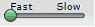
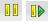

Developing Scripts With Selenium-IDE¶
Developing Scripts With Selenium-IDE¶
Introduction¶
The Selenium-IDE (Integrated Development Environment) is the tool you use to develop your Selenium scripts. Its an easy to use Firefox plug-in and is the generally the most efficient way to develop test scripts. It also contains a context menu that allows you to first select a UI element from the browser’s currently displayed page and then select from a list of Selenium commands with parameters pre-defined according to the context of the selected UI element. This is not only a time-saver, but also an excellent way of learning Selenium script syntax.
This chapter is all about the Selenuim IDE and how to use it effectively.
Installing the IDE¶
Using Firefox, first, download the IDE from the SeleniumHQ downloads page
When downloading from Firefox, you’ll be presented with the following window.
Select Install Now. The Firefox Add-ons window pops up, first showing a progress bar, and when the download is complete, displays the following.
Restart Firefox. After Firefox reboots you will find the Selnium IDE listed under the Firefox Tools menu.
Opening the IDE¶
To run the Sel-IDE, simply select it from the Firefox Tools menu. It opens as follows with an empty script-editing window and a menu for loading, or creating new, your scripts.
IDE Features¶
The File menu allows you to create, open and save test script and test suite files. The Edit menu allows copy, paste, delete, undo and select all operations for editing the commands in your script. The Options menu allows the changing of settings. Specifically you can set the timeout value for certain commands, add user-defined user extensions to base set of Selenium commands, and you can specify the format (language) used when saving your scripts. The Help menu is the standard Firefox Help menu. The Sel-IDE runs within a Firefox browser window and therefore displays the standard Firefox Help menu. There is nothing specific to Selenium-IDE in the Help menu.
The toolbar contains buttons for controlling the execution of your test scripts, including a step feature for debugging your scripts. The right-most button, the one with the red-dot, is the record button.
- 
- Speed Control: controls how fast your script runs.
- Run All: Runs the entire test suite when a test suite with multiple test scripts is loaded.
- Run: Runs the currently selected test. When only a single test is loaded this button and the Run All button have the same effect.
- 
- Pause/Resume: Allows stopping and starting of a running script.
- Step: Allows one to “step” through a script by running it one command at a time. Use for debugging scripts.

- TestRunner Mode: Allows you to run the script in a browser loaded with the Selenium-Core TestRunner. The TestRunner is not commonly used now and is likely to be deprecated. This button is for evaluating scripts for backwards compatibility with the TestRunner. Most users will probably not need this button.
- Apply Rollup Rules:
- Record: Records the user’s browser actions.
Your script is displayed in the following window. It has two tabs, one for displaying the command and their parameters in a readable “table” format.
The Source tab displays the script in the native format in which the file will be stored. By default this is HTML although it can be changed to a programming language such as Java or C#, or a scripting language like Python. See the Options menu for details. The Source view also allows one to edit the script in it’s raw form, including copy, cut and paste operations.
The Command, Target, and Value entry fields display the currently selected command along with its parameters (if any). These are entry fields where you can modify the currently selected command.
If you start typing in the Command field, a drop-down list will be populated based on the first characters you type; you can then select your desired command from the drop-down.
The bottom box displays the Log. When you run your script, error messages, and information messages showing the progress of your script, are displayed here. This is sometimes useful for script debugging. Notice the Clear button for clearing the Log. Also notice the Info button is a drop-down allowing selection of different levels of information to display.
Building Scripts¶
There are three primary methods for developing scripts. Frequently, a script developer will require all three techniques.
Recording¶
Many first-time users begin by recording a script from their interactions with a website. When Sel-IDE is first opened the record button is ON by default.
Note
This can be set to OFF as a default with an available user extension.
The Recorder will automatically insert commands into your script based on your mouse clicks. Typically, this will include:
- clicking a link - click or clickAndWait commands
- entering values - type command
- selecting options from a drop-down listbox - select command
- click checkboxes or radio buttons - click command
Here’s some “gotchas” to be aware of:
- The type command may require clicking on some other area of the web page for it to record.
- Following a link usually records a click commands. You will often need to change this to clickAndWait to ensure your script pauses until the new page is completely loaded. Otherwise, your script will continue running commands before the page has loaded all its UI elements. This will cause unexpected script failures.
Editing¶
Insert Command¶
Select the point in your script where you want to insert the command. Right- click and select Insert Command. Now use the command edit text fields to enter your new command and its parameters.
Insert Comment¶
Comments may be added to make your script more readable. These comments are ignored when the script is run. Select the point in your script where you want to insert the comment. Right-click and select Insert Comment. Now use the first command edit text fields to enter the comment.
Edit a Command or Comment¶
Simply select the line to be changed and edit it using the command editing text fields.
Opening and Saving a Script¶
The File-»Open, Save and Save As menu commands behave similar to opening and saving files in most other programs. When you open an existing script, it loads that script file into the IDE and displays its Selenium commands in the main script editing window.
Notice also that you can open and save test suite files. Test suites will be discussed later in this section.
Note
At the time of writing there’s a bug, where at times, when the IDE is first opened and then you select File->Open, nothing happens. If you see this, close down the IDE and restart it (you don’t need to close the browser itself). This will fix the problem.
Running Scripts¶
The IDE allows many options for running your script. You can run a script all at once, stop and start it, run it one line at a time, run a single command you are current developing, and you can do a batch run of an entire test suite. Execution of scripts is very flexible in the IDE.
- Run a Script
- Click the Run button to run the currently displayed script.
- Run a Test Suite
- Click the Run All button to run all the scripts in the currently loaded test suite.
- Stop and Start
- The Pause button can be used to stop the script while it is running. The icon of this button then changes to indicate the Resume button. To continue click Resume.
- Stop in the Middle
- You can set a breakpoint in the script to cause the script to stop on a particular command. This is useful for debugging your script. To set a breakpoint, select a command, right-click, and from the context menu select Toggle Breakpoint.
- Start from the Middle
- You can tell the IDE to begin running from a specific command in the middle of the script. This also is used for debugging. To set a startpoint, select a command, right-click, and from the context menu select Set/Clear Start Point.
- Run Any Single Command
- Double-click any single command to run it by itself. This is useful when writing a single command. It lets you immediately test a command you are constructing, but not sure if it is correct. You can double-click it to see if it runs correctly. This is also available from the context menu.
Debugging¶
Debugging means finding and fixing errors in your script. This is a normal part of script development.
We won’t teach debugging here as most new users to Selenium will already have some basic experience with debugging. If this is new to you, we recommend you ask one of the developers in your organization.
Breakpoints and Startpoints¶
The Sel-IDE supports the setting of breakpoints and the ability to start and stop the running of a script, from any point within the script. That is, one can run up to a specific command in the middle of the script and inspect how the script behaves at that point. To do this, set a breakpoint on the command just before the one to be examined.
To set a breakpoint, select a command, right-click, and from the context menu select Toggle Breakpoint. Then click the Run button to run your script from the beginning up to the breakpoint.
It is also sometimes useful to run a script from somewhere in the middle to the end of the script or up to a breakpoint that follows the starting point. For example, suppose your script first logs into the website and then performs a series of tests and you are trying to debug one of those tests. However, you only need to login once, but you need to keep rerunning your tests as you are developing them. You can login once, then run your script from a startpoint placed after the login portion of your script. That will prevent you from having to manually logout each time you rerun your script.
To set a startpoint, select a command, right-click, and from the context menu select Set/Clear Start Point. Then click the Run button to execute the script beginning at that startpoint.
Stepping Through a Script¶
Find Button¶
The Find button is used to see which UI element on the currently displayed webpage (in the browser) is used in the currently selected Selenium command. This is useful when building a locator for a command’s first parameter (see the section on locators in the Selenium Commands chapter). It can be used with any command that must identify a UI element on a webpage, i.e. click, clickAndWait, type, and the assert and verify commands among others.
Select any command that must identify a UI element. Click the Find button. Now look on the webpage displayed in the Firefox browser.
Page Source for Debugging¶
Often, when debugging a script, you simply must look at the page source (the HTML for the webpage you’re trying to test) to determine a problem. Firefox makes this easy. Simply, right-click the webpage and select Page Source. The HTML opens in a separate window. Use its Search feature (F3 function key) to search for a keyword to find the HTML for the UI element you’re trying to test.
Writing a Test Suite¶
A test suite is a collection of test scripts and is displayed in the left-most pane in the IDE. Test scripts may be added to the list and deleted from it. Test suites may be opened and saved. When a test suite is saved any changes to tests scripts within that suite are also saved.
User Extensions¶
User extensions are javascript files that allow one to create their own customized and features to add additional functionality. Often this is in the form of customized commands although this extensibility is not limited to additional commands. User extensions are loaded by setting the path to user extension files through the Options menu.
There are a number of useful extensions created by users available at the SeleniumHQ website. Also you’ll find information on writing your own extensions.
Format¶
Format, under the Options menu, allows you to select a language for saving and displaying the script. This is for supporting Selenium-RC. The default is HTML and if you will only be running your Selenium scripts from the IDE you can ignore this feature.
If, however, you will be using Selenium-RC to run your scripts, this is how you translate your test script into a programming language. Select the language, i.e. Java, PHP, you will be using with Selenium-RC for developing your test programs. This simply save the scripts using File-»Save. Your script will be translated into a series of functions in the language you choose. Essentially, program code supporting your test is generated for you by Selenium-IDE.
Also, note that if the generated code does not suit your needs, you can alter it by editing a configuration file which defines the generation process. Each supported language has configuration settings which are editable. This is under Options->Options->Format tab.
Note
At the time of writing, this feature is not yet supported by the Selenium developers. However the author has altered the C# format in a limited manner and it has worked well.
Summary¶
Table Of Contents
- Developing Scripts With Selenium-IDE